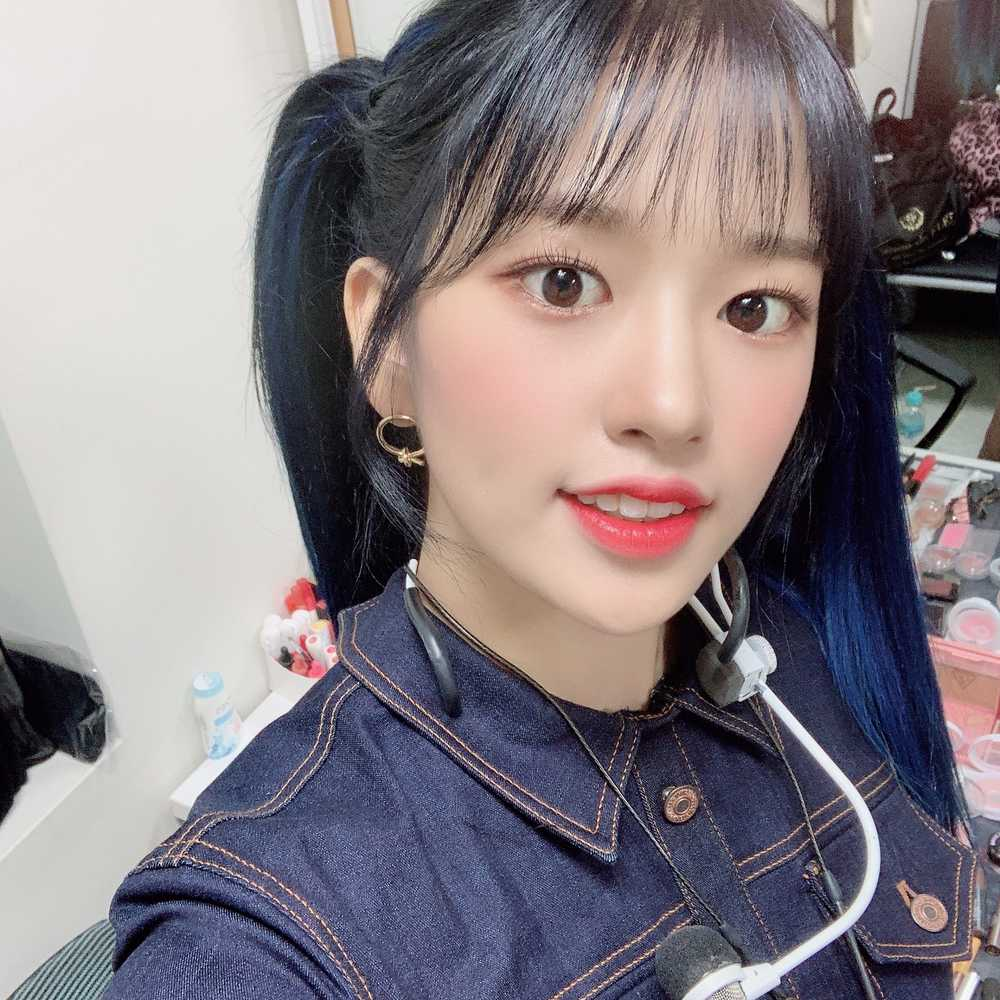
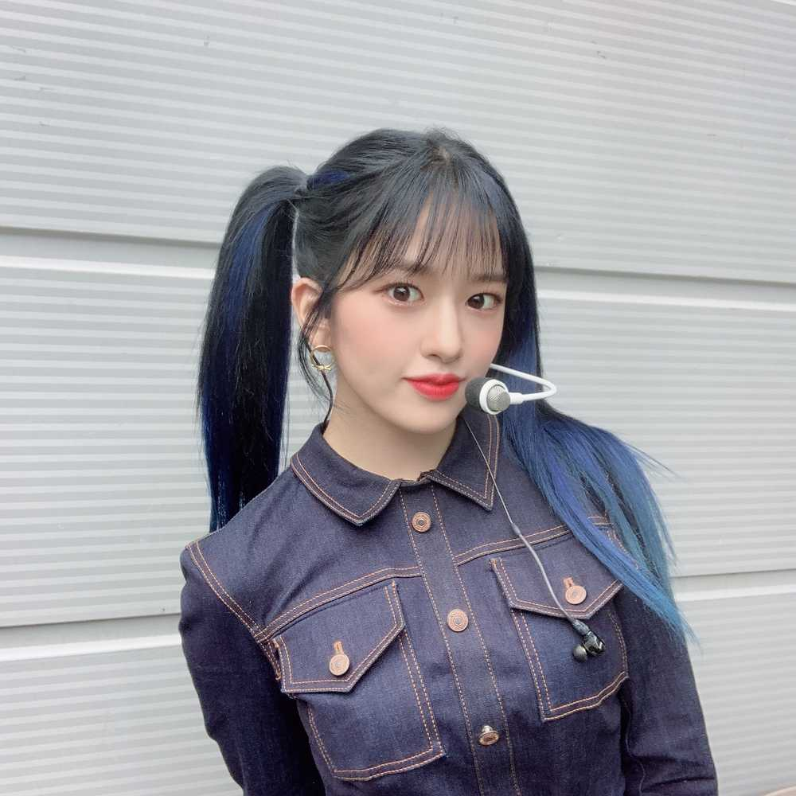

다들 컴백쇼랑 뮤비 그리구 노래 다 들어봤나영 ㅎㅎ
아직도 피에스타 무대 위즈원한테 처음 공개할 때의
그 긴장감이랑 두근거림이 너무 생생한 거 같아요😉
이번에 수록곡도 진짜 너무너무 좋아하는데
우연이 아니야도 좋구 데이드림도 좋구
유리언니랑 은비언니 노래도 좋고 뭔가 장르가 되게
다양해서 좋은 거 같아여 물론 그만큼 녹음할 때 좀 어려웠지만 ..
다른 것보다 위즈원이 너무너무 좋아해주는 것 같아서
만족스러운 앨범이 될 거 같아요 ㅎㅎㅎㅎ
항상 너무 고마워요 🥰😘